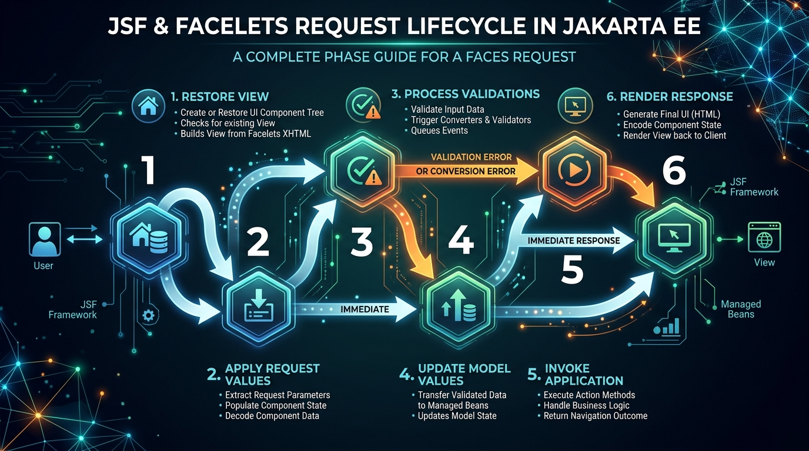

<title>Facelets & Jakarta Faces</title>
<meta name="description" content="Server-rendered web pages in Jakarta EE: the JSF component model, the six-phase lifecycle, and backing beans.">
<link rel="stylesheet" href="assets/css/styles.css">
<script>window.PAGE = "09-facelets-jsf";</script>

<main class="page">

  <h1>Unit 09 · Facelets &amp; Jakarta Faces (JSF)</h1>
  <p class="lede">So far the “client” has been imaginary. <strong>Jakarta Faces (JSF)</strong> is one way
    to build the actual web pages — on the server — where the page is a tree of components bound to
    Java objects. <strong>Facelets</strong> is the file format you write those pages in (XHTML).</p>

  <div class="callout"><span class="callout__i">↩︎</span>
    <div class="callout__b"><b>Recap</b> The web container (Unit 02) runs the UI layer and calls your
      beans. JSF lives here.</div>
  </div>

  <span class="eyebrow">concept</span>
  <h2>The idea: components bound to a bean</h2>
  <p>Instead of writing raw HTML and parsing form data by hand, you place <em>components</em>
    (<code>&lt;h:inputText&gt;</code>, <code>&lt;h:commandButton&gt;</code>) and bind each one to a
    field or method on a Java object called a <strong>backing bean</strong> using
    <strong>Expression Language</strong>: <code>#{...}</code>.</p>
  <p>JSF then does the tedious parts for you: read the submitted values into the bean, run validation,
    call your action method, re-render the page.</p>

  <div class="code-head">HelloWorld.java — the backing bean</div>
  <pre><code>package jsf.hello;

import java.io.Serializable;
import jakarta.enterprise.context.SessionScoped;
import jakarta.inject.Named;

@Named("helloWorld")          // reachable in the page as #{helloWorld...}
@SessionScoped                // one per browser session
public class HelloWorld implements Serializable {
    private String str = "Hello from the server";
    public String getStr() { return str; }
    public void setStr(String str) { this.str = str; }
}</code></pre>

  <div class="code-head">helloWorld.xhtml — the Facelets view</div>
  <pre><code>&lt;!DOCTYPE html&gt;
&lt;html xmlns="http://www.w3.org/1999/xhtml"
      xmlns:h="jakarta.faces.html"&gt;
&lt;h:head&gt;&lt;title&gt;Hello&lt;/title&gt;&lt;/h:head&gt;
&lt;h:body&gt;
    &lt;h:outputText value="#{helloWorld.str}"/&gt;   &lt;!-- calls getStr() --&gt;
&lt;/h:body&gt;
&lt;/html&gt;</code></pre>
  <p><em>Note:</em> in Jakarta EE 9+ the namespaces are <code>jakarta.faces.html</code>,
    <code>jakarta.faces.core</code> — not the old <code>http://xmlns.jcp.org/...</code> URLs.</p>

  <span class="eyebrow">concept</span>
  <h2>A working form</h2>
  <div class="code-head">student_registration.xhtml</div>
  <pre><code>&lt;html xmlns="http://www.w3.org/1999/xhtml"
      xmlns:h="jakarta.faces.html"&gt;
&lt;h:body&gt;
  &lt;h:form&gt;
    &lt;h:outputLabel value="First name: "/&gt;
    &lt;h:inputText value="#{studentBean.firstName}" required="true"/&gt;

    &lt;h:commandButton value="Register"
                     action="#{studentBean.registerStudent}"/&gt;
  &lt;/h:form&gt;

  &lt;h:outputText value="#{studentBean.submissionMessage}"
                rendered="#{not empty studentBean.submissionMessage}"/&gt;
&lt;/h:body&gt;
&lt;/html&gt;</code></pre>
  <pre><code>@Named("studentBean") @RequestScoped
public class StudentBean {
    private String firstName;
    private String submissionMessage;

    public void registerStudent() {
        submissionMessage = "Registered: " + firstName;
    }
    // getters + setters
}</code></pre>

  <div class="bench" data-run="canned">
    <div class="bench__head"><span class="dot"></span><span class="kind">try it</span><span class="mode">replay — one request through JSF</span></div>
    <pre class="bench__code"><code>// user types "Ada" and clicks Register — trace the 6 phases</code></pre>
    <div class="bench__controls">
      <button class="btn-run" type="button">Run</button>
      <span class="bench__hint">Every button click runs all six phases in order.</span>
    </div>
    <script type="text/plain" class="bench__canned">
1 Restore View        rebuild the component tree for this page
2 Apply Request Values firstName input reads "Ada" from the POST
3 Process Validations  required="true" passes (not empty)
4 Update Model Values   studentBean.setFirstName("Ada")
5 Invoke Application    studentBean.registerStudent() runs -> submissionMessage set
6 Render Response       page re-rendered; outputText now shows "Registered: Ada"
    </script>
    <pre class="bench__out" aria-live="polite"></pre>
  </div>

  <span class="eyebrow">concept</span>
  <h2>The six-phase lifecycle</h2>
  <figure>
    
    <figcaption><b>Takeaway:</b> if validation fails at phase 3, JSF jumps straight to phase 6 and
      re-shows the page with error messages — your action method never runs.</figcaption>
  </figure>
  <div class="tablewrap"><table>
    <thead><tr><th>#</th><th>Phase</th><th>What happens</th></tr></thead>
    <tbody>
      <tr><td>1</td><td>Restore View</td><td>Build (first visit) or restore (postback) the component tree.</td></tr>
      <tr><td>2</td><td>Apply Request Values</td><td>Each component grabs its value from the request.</td></tr>
      <tr><td>3</td><td>Process Validations</td><td>Run converters + validators. On failure → jump to Render Response.</td></tr>
      <tr><td>4</td><td>Update Model Values</td><td>Copy validated values into the backing bean (calls setters).</td></tr>
      <tr><td>5</td><td>Invoke Application</td><td>Run your action method (may call an EJB, hit the DB).</td></tr>
      <tr><td>6</td><td>Render Response</td><td>Produce the HTML; save view state for next time.</td></tr>
    </tbody>
  </table></div>

  <span class="eyebrow">concept</span>
  <h2>Templating, composites, resources</h2>
  <div class="tablewrap"><table>
    <thead><tr><th>Tag</th><th>Use</th></tr></thead>
    <tbody>
      <tr><td><code>ui:composition</code> / <code>ui:define</code> / <code>ui:insert</code></td><td>Page templating — one master layout, pages fill named holes.</td></tr>
      <tr><td><code>ui:include</code></td><td>Pull in another page fragment.</td></tr>
      <tr><td><code>ui:repeat</code></td><td>Loop over a list to render rows.</td></tr>
      <tr><td><code>composite:interface</code> / <code>composite:implementation</code></td><td>Build a reusable custom component (a “Login box”, an “Address form”).</td></tr>
    </tbody>
  </table></div>
  <p>Static files (CSS, images, JS) go in a <code>resources/</code> folder and are referenced with
    <code>&lt;h:outputStylesheet library="css" name="style.css"/&gt;</code> or
    <code>#{resource['images:logo.png']}</code>.</p>

  <span class="eyebrow">check yourself</span>
  <section class="quiz" data-quiz>
    <h3>Check yourself</h3>
    <script type="application/json">
    [
      {"q":"What is a 'backing bean'?","opts":["A database table","A Java object a JSF page binds its components to, via #{...}","A message queue","The WildFly server"],"a":1,"why":"The page reads/writes fields and calls methods on the backing bean through Expression Language."},
      {"q":"Validation fails in phase 3 (Process Validations). What happens next?","opts":["Phase 4 runs anyway","JSF jumps straight to phase 6 (Render Response) and shows errors; your action never runs","The server crashes","The form is submitted with empty values"],"a":1,"why":"That shortcut is why validation must run before Update Model Values — invalid data never reaches the bean."},
      {"q":"In which phase does your action method (e.g. registerStudent) run?","opts":["Restore View","Apply Request Values","Invoke Application (phase 5)","Render Response"],"a":2,"why":"Phase 5 runs application logic after the model has been updated with validated values."},
      {"q":"Correct Facelets namespace for HTML components in Jakarta EE 9+?","opts":["http://java.sun.com/jsf/html","http://xmlns.jcp.org/jsf/html","jakarta.faces.html","jakarta.jsf.components"],"a":2,"why":"The namespaces were shortened to jakarta.faces.html / jakarta.faces.core."},
      {"q":"What does #{...} do in a Facelets page?","opts":["A CSS rule","Expression Language — binds the component to a bean field or method","An HTML comment","A Java import"],"a":1,"why":"#{helloWorld.str} calls getStr(); on a button's action it calls the method."}
    ]
    </script>
  </section>

  <span class="eyebrow">recap</span>
  <h2>One-line summary</h2>
  <div class="tablewrap summary"><table><tbody>
    <tr><td>JSF</td><td>Server-side component UI framework; Facelets (XHTML) is the page format.</td></tr>
    <tr><td>Backing bean</td><td><code>@Named</code> Java object the page binds to with <code>#{...}</code>.</td></tr>
    <tr><td>Lifecycle</td><td>Restore View → Apply Values → Validate → Update Model → Invoke Application → Render.</td></tr>
    <tr><td>Validation fails</td><td>Skip to Render Response; action method never runs.</td></tr>
    <tr><td>Reuse</td><td>Templates (<code>ui:*</code>), composite components, <code>resources/</code>.</td></tr>
  </tbody></table></div>

</main>

<script src="assets/js/course.js"></script>
<script src="assets/js/runner.js"></script>
